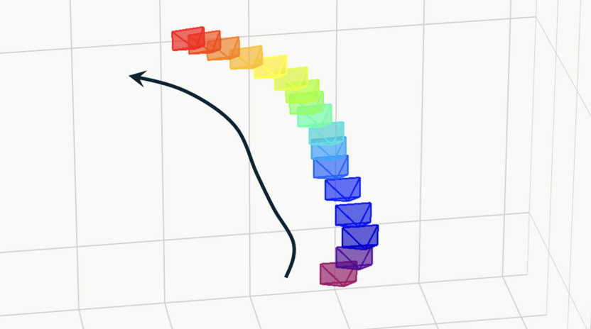
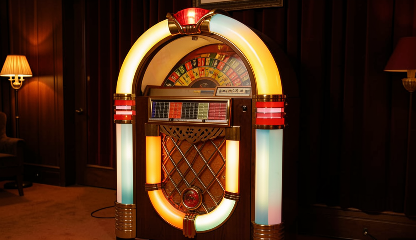

Probing into Camera Control of Video Models
supplementary videos
Multi-view Video Generation
Our method can guide base models generate pseudo multi-view videos (results generated using Wan2.2-I2V-A14B).
Basic Motions
Videos with basic motions generated using Wan2.2-I2V-A14B.
Complex Trajectories



Videos with complex motions generated using Wan2.2-I2V-A14B.
Probing into Multi-view Capabilities
Motion: Arc right.

Motion: Arc right.

Motion: Arc left.

Motion: Arc right.
Qualitative Comparison with Other Methods
Truck Right
Prompt: A 3D model of a 1800s victorian house.
Pan Left
Prompt: A car moving slowly on an empty street, rainy evening.
Pedestal Down
Prompt: An astronaut is riding a horse in the space in a photorealistic style.
Tilt Up
Prompt: A boat sailing leisurely along the Seine River with the Eiffel Tower in background by Vincent van Gogh.
Zoom In
Prompt: A panda playing on a swing set.
Zoom Out
Prompt: Aerial panoramic video from a drone of a fantasy land.
Arc Left
Prompt: A robot DJ is playing the turntable, in heavy raining futuristic tokyo rooftop cyberpunk night, sci-fi, fantasy.
Arc Right
Prompt: Flying through fantasy landscapes.